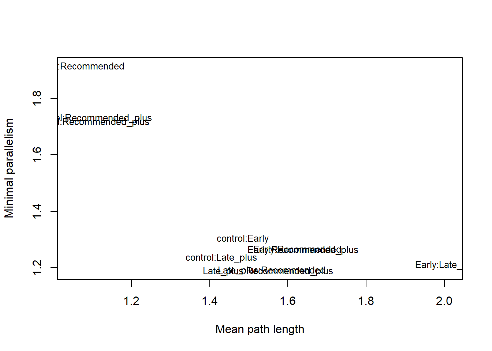
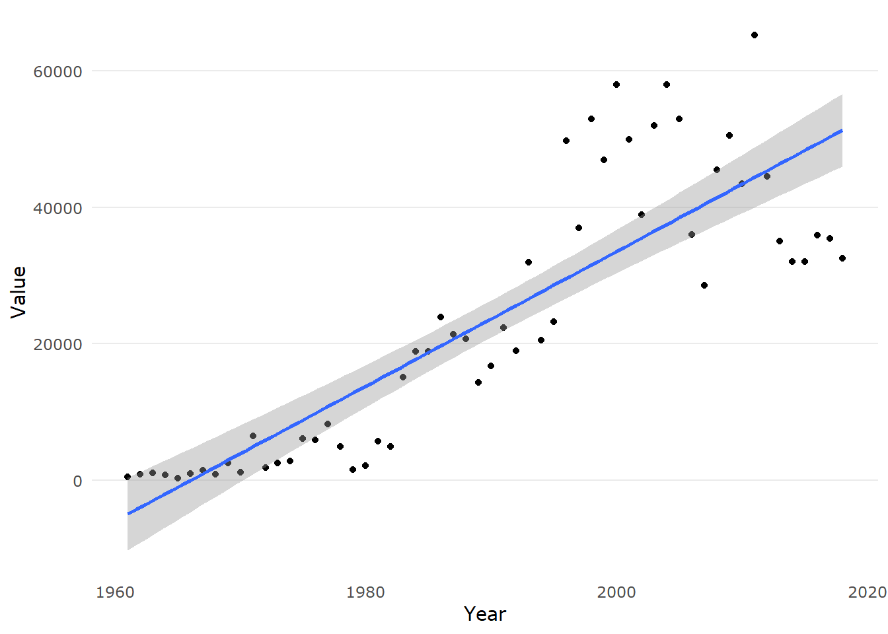

4 Preliminary Analysis
4.1 Explore and Visualise Data
First let’s import the data. Each row provides the mean yield for each experimental treatment.
The data explored in the PM_MB_means data frame is a list of mean values from each treatment in each respective experiment.
These preliminary analyses will focus on the change in mungbean yields, which is attributable to the fungicide treatment.
Later in this document we will also consider the impact of fungicide treatments on disease incidence/severity.
Mean powdery mildew incidence was recorded at the end of each growing season.
Some experiments recorded disease incidence throughout the season and these were summarised with AUDPC.
AUDPC for trials which only provided final powdery mildew incidence was calculated using the record of ‘first sign of disease’ and final assessment.
More details on how the PM_MB_means data was compiled can be found in the ‘Data wrangle vingette’
Various factors have been studied in the previous experiments which may influence the subsequent meta-analysis. On this page, unless stated, the following plots and analyses were made disregarding other effects. The following factors are postulated to influence mungbean grain yield and/or powdery mildew mean plot severity.
1 Fungicide type
2 Fungicide dose (varies only slightly within some fungicide types)
3 Number of fungicide sprays
4 Timing of fungicide spray/s relative to first sign of disease
5 Host cultivar (probably is a co-variate with season due to changing cultivars over time)
6 Experiment location
7 Row spacing
8 In-crop rainfall
9 Irrigated versus non-irrigated trials
10 Mean daily temperature in the weeks following spray application
11 Final disease rating
12 Two pathogen species cause PM (new discovery in 2018)
The data plotted below are from 26 field trials between (2001 - 2019) of which the details are described in the studies considered in meta-analysis section.
4.1.1 Fungicides
4.1.1.1 Fungicide type
First let’s standardise the sulphur treatments. Some early experiments tested different formulations. There was no difference in the sulphur formulations so we will refer to all of them as “sulphur”.
# Remove the variation in different sulphur formulations
unique(PM_MB_means[grep("sulphur", PM_MB_means$fungicide_ai),
"fungicide_ai"])## [1] sulphur sulphur (SC) sulphur (WP) sulphur (Ultra SC)
## 14 Levels: 200 g/L azoxystrobin + 80 g/L cyproconazole ...Let’s explore how many different types of fungicide were used and at what frequency.
PM_MB_means %>%
group_by(fungicide_ai, trial_ref) %>%
summarise() %>%
count(sort = TRUE) %>%
rename(Trials = n) %>%
ggplot(aes(x = reorder(fungicide_ai, Trials), y = Trials)) +
xlab("Fungicide active ingredient") +
ylab("N Trials") +
geom_col() +
scale_fill_usq() +
ggtitle(label = "Number of trials in which the\nspecified fungicide was used") +
scale_colour_usq() +
coord_flip()## `summarise()` regrouping output by 'fungicide_ai' (override with `.groups` argument)
The demethylation inhibitors (DMI), tebuconazole and propiconazole, are used in the highest frequencies, along with sulphur. The DMIs have the same fungicide mode of action and are good candidates to be pooled in the meta-analysis.
Amistar Xtra and Custodia both contain strobilurin and triazole, however, because they contain differing dose ratios (inverted) pooling may not be appropriate.
Perhaps best way forward is to focus the meta-analysis on only the DMIs. This can then be compared to an additional meta-analysis including azoxystrobin as a comparison.
Before we exclude non-DMI fungicides let’s have a look at the efficacy of the other fungicides in comparison to the DMIs. For this comparison we will focus on the proportional yield saved, relative to the no spray control. The primary focus of this research is the effect of fungicide on mitigating yield loss due to disease. We are using proportional yield, relative to the no spray control, to reduce the effect of location and seasonal influences.
Let’s investigate the difference in the effect of the type of fungicide on proportion of yield saved, but first we need to calculate yield saved relative to the no spray control.
PM_MB_means$grain_yield.t.ha. <-
as.numeric(PM_MB_means$grain_yield.t.ha.) # NAs produced due to some cells having text description to why there is no specific data
for (i in unique(PM_MB_means$trial_ref)) {
# Loop code over each trial reference
dat1 <- PM_MB_means[PM_MB_means$trial_ref == i, ]
if (any(is.na(unique(dat1$row_spacing)))) {
# If there is no recorded row.spacing don't calculate proportional yield, skip to the next trial
warning(
unique(dat1$trial_ref),
"at",
unique(dat1$location),
"in year",
unique(dat1$year),
"has unknown row.spacing (NA)\n 'yield_gain' and 'proportional yield gain' not calculated\n"
)
next()
}
for (j in unique(dat1$row_spacing)) {
# Loop within trial row_spacing
dat2 <- dat1[dat1$row_spacing == j, ]
controlY <-
mean(dat2[dat2$fungicide_ai == "control", "grain_yield.t.ha."]) #Mean taken as some trials had multiple control reps
# Calculate the yield gain relative to the no spray control (controlY)
dat2$yield_gain <- dat2$grain_yield.t.ha. - controlY
dat2$prop_YG <- dat2$yield_gain / controlY
# insert NA as yeild_gain and proportional yield gain for the controls
dat2[dat2$fungicide_ai == "control", c("yield_gain", "prop_YG")] <-
NA
# Reassign values to row_spacing subset
dat1[dat1$row_spacing == j, ] <- dat2
}
# Reassign values to trial_ref subset
PM_MB_means[PM_MB_means$trial_ref == i, ] <- dat1
}## Warning: AM1303atPremerin year2013has unknown row.spacing (NA)
## 'yield_gain' and 'proportional yield gain' not calculated# ____________________________________________
# calculate yield gain and prop_yield gain for experiments with no row spacing data
dat1 <- PM_MB_means[PM_MB_means$trial_ref == "AM1303", ]
controlY <-
mean(dat1[dat1$fungicide_ai == "control", "grain_yield.t.ha."])
dat1$yield_gain <- dat1$grain_yield.t.ha. - controlY
dat1$prop_YG <- dat1$yield_gain / controlY
dat1[dat1$fungicide_ai == "control", c("yield_gain", "prop_YG")] <-
c(NA, NA)
PM_MB_means[PM_MB_means$trial_ref == "AM1303", ] <- dat1
write.csv(PM_MB_means,
"cache/1911_PM_MB_means&Ygains.csv")Now we have calculated proportional yield savings we can inspect the difference between the fungicide active ingredients
PM_MB_means %>%
group_by(fungicide_ai, total_fungicide) %>%
summarise(
n = length(prop_YG),
lower_2.5 = quantile(prop_YG, na.rm = T, c(0.025)),
median = median(prop_YG, na.rm = T),
mean = mean(prop_YG, na.rm = T),
upper_97.5 = quantile(prop_YG, na.rm = T, c(0.975))
) %>%
filter(n >= 5) %>% # remove any fungicide groups with less than 5 observations
arrange(desc(median)) %>%
kable(
caption = "Fungicide effect on proportion of yield gain.",
col.names = c(
"Fungicide active ingredient",
"Total fungicide applications",
"n Treatments",
"2.5% quartile",
"Median proportional grain yield",
"Mean proportional grain yield",
"97.5 % quartile"
),
align = "c"
) %>%
kable_styling(fixed_thead = T, full_width = T) %>%
column_spec(c(2, 3), width = "1cm") %>%
footnote(general = "Fungicides with less than five observations were omitted from this table")| Fungicide active ingredient | Total fungicide applications | n Treatments | 2.5% quartile | Median proportional grain yield | Mean proportional grain yield | 97.5 % quartile |
|---|---|---|---|---|---|---|
| propiconazole | 2 | 27 | -0.1480329 | 0.2340999 | 0.2097994 | 0.6560586 |
| 200 g/L tebuconazole + 120 g/L azoxystrobin | 2 | 18 | -0.2370666 | 0.2181752 | 0.1597947 | 0.3561915 |
| sulphur | 2 | 34 | -0.0954568 | 0.1676904 | 0.1796081 | 0.5922165 |
| tebuconazole | 2 | 36 | -0.1293437 | 0.1540619 | 0.1505931 | 0.4743985 |
| propiconazole | 1 | 26 | -0.2055390 | 0.1434268 | 0.1202546 | 0.4376940 |
| 200 g/L tebuconazole + 120 g/L azoxystrobin | 1 | 18 | -0.1623981 | 0.1263883 | 0.1722485 | 0.4469576 |
| tebuconazole | 1 | 36 | -0.1141671 | 0.1031954 | 0.1065776 | 0.4729585 |
| tebuconazole | 3 | 5 | -0.1700096 | 0.0815570 | 0.0677753 | 0.2552864 |
| 200 g/L azoxystrobin + 80 g/L cyproconazole | 1 | 18 | -0.0993975 | 0.0512787 | 0.1176350 | 0.5978362 |
| sulphur | 3 | 7 | -0.1767008 | 0.0509326 | 0.0013548 | 0.1418259 |
| 200 g/L azoxystrobin + 80 g/L cyproconazole | 2 | 12 | -0.1247602 | 0.0500710 | 0.1614477 | 0.5674767 |
| carbendazim | 2 | 5 | -0.1961665 | 0.0397510 | 0.0381234 | 0.1876341 |
| carbendazim | 1 | 10 | -0.0907106 | 0.0069076 | 0.0557288 | 0.3545186 |
| sulphur | 1 | 30 | -0.1619475 | 0.0061559 | 0.0394279 | 0.3769036 |
| control | 0 | 52 | NA | NA | NaN | NA |
| Note: | ||||||
| Fungicides with less than five observations were omitted from this table |
Let’s visualise this in a plot for one and two sprays only.
PM_MB_means %>%
mutate(fungicide_ai = as.factor(PM_MB_means$fungicide_ai)) %>%
filter(total_fungicide == 1 | total_fungicide == 2) %>%
filter(
fungicide_ai != "pyrazophos" &
fungicide_ai != "control" &
fungicide_ai != "benomyl" &
fungicide_ai != "Acibenzolar-S-methyl"
) %>%
mutate(fungicide_ai = factor(
fungicide_ai,
levels = c(
"carbendazim",
"pyraclostrobin",
"sulphur",
"200 g/L azoxystrobin + 80 g/L cyproconazole",
"tebuconazole",
"propiconazole",
"200 g/L tebuconazole + 120 g/L azoxystrobin"
)
)) %>%
ggplot(aes(y = prop_YG, x = fungicide_ai)) +
facet_grid(rows = vars(total_fungicide)) +
geom_boxplot(aes(fill = fungicide_ai)) +
geom_hline(aes(yintercept = 0), size = 0.5) +
labs(y = "Proportion of grain yield saved",
title = "Grain yield proportion saved\ngrouped by fungicide type") +
theme(legend.position = "none") +
scale_fill_usq() +
coord_flip()
There is a small yield effect among the strobilurin fungicide mixes and the DMI fungicides. While there is some differences in the variation between tebuconazole and propiconazole, the medians are very similar. I think it is safe to combine these fungicides, with the same mode of action in the meta-analysis. The follow-up spray seems to show an increase in yield protection. Interestingly sulphur sprays show good protection when sprayed twice.
4.1.1.2 Fungicide Doses
From this point on we will investigate only the DMI fungicides, tebuconazole and propiconazole, and disregard all other fungicide modes-of-action.
We should check that all fungicide doses that were used were roughly the same, if we are to compare between trials where dose might be different.
PM_MB_means %>%
filter(fungicide_ai == "tebuconazole" |
fungicide_ai == "propiconazole") %>%
select(
trial_ref,
year,
location,
first_sign_disease,
fungicide_ai,
dose_ai.ha,
total_fungicide
) %>%
ggplot(aes(x = as.factor(dose_ai.ha), fill = fungicide_ai)) +
xlab("Dose (g ai/ha)") +
ggtitle(label = "Total number of treatments for each respective tebuconazole dose") +
geom_bar() +
scale_fill_usq() +
scale_colour_usq()
All trials that used tebuconazole used approximately the same dose. Dose of the active ingredient ranged from 62.35 g per hectare to 60 g per hectare.
Doses for propiconazole range from 62.5 to 125, a large variation. Let’s inspect the difference in yields for each dose.
PM_MB_means %>%
filter(fungicide_ai == "propiconazole") %>%
ggplot(aes(x = relevel(as.factor(dose_ai.ha), "62.5"), y = prop_YG)) +
xlab("Dose (g ai/ha)") +
ggtitle(label = "Yield for each respective propiconazole dose,\nfaceted by number of applications") +
geom_boxplot(fill = usq_cols("usq charcoal"), alpha = 0.5) +
facet_grid(cols = vars(total_fungicide))
This dose effect should be acknowledged in the meta-analysis. How many treatments of each dose have been investigated per trial?
table(as.character(PM_MB_means[PM_MB_means$fungicide_ai == "propiconazole",]$trial_ref),
PM_MB_means[PM_MB_means$fungicide_ai == "propiconazole",]$dose_ai.ha)##
## 62.5 125
## AM1303 3 0
## AM1304 3 0
## AM1305 3 0
## BB1305 3 0
## mung1112/01 2 2
## mung1112/02 2 2
## mung1617/01 0 15
## mung1617/02 0 15
## mung1718/01 0 6Two trials show both doses were applied in the same trial, mung1112/01 and mung1112/02. Let’s look at the difference in proportion of yield saved in these trials.
PM_MB_means[(PM_MB_means$trial_ref == "mung1112/01" |
PM_MB_means$trial_ref == "mung1112/02") &
PM_MB_means$fungicide_ai == "propiconazole",] %>%
mutate(dose_ai.ha = as.factor(dose_ai.ha)) %>%
ggplot(aes(y = prop_YG, x = dose_ai.ha))+
geom_boxplot()+
facet_grid(cols = vars(total_fungicide)) +
xlab("Dose (g ai/ha)") +
ggtitle(label = "Yield for each respective propiconazole dose, faceted by number of applications") +
geom_boxplot(fill = usq_cols("usq charcoal"), alpha = 0.5)
This plot is similar to the previous plot, indicating dose needs to be considered in the analysis. Especially as there is a interaction between dose and number of sprays.
4.1.1.3 Number of fungicide sprays
Let’s look at the frequency of sprays per fungicide.
##
## 0 1 2 3 7
## 200 g/L azoxystrobin + 80 g/L cyproconazole 0 18 12 4 0
## 200 g/L tebuconazole + 120 g/L azoxystrobin 0 18 18 0 0
## Acibenzolar-S-methyl 0 0 1 0 0
## benomyl 0 0 1 0 0
## carbendazim 0 10 5 0 0
## control 52 0 0 0 0
## propiconazole 0 26 27 3 0
## pyraclostrobin 0 4 4 0 0
## pyrazophos 0 0 1 0 0
## sulphur 0 30 34 7 3
## sulphur (SC) 0 0 0 0 0
## sulphur (Ultra SC) 0 0 0 0 0
## sulphur (WP) 0 0 0 0 0
## tebuconazole 0 36 36 5 0This table shows that the majority of treatments inspected one and two spray management practices.
4.1.1.4 Timing of fungicide sprays
The timing of fungicide application can be crucial for maximum disease control and yield loss mitigation. The experiments all relied on natural infection and thus infection at a standardised crop maturity stage was not possible. To best estimate the effect of fungicide application timing we will use the day when the disease was first found in the field as a reference. The first sign of disease is a useful reference as it can be assessed with little training for the assessor.
First let’s make a plot to visualise when one or more spray management regimes were made in relation to the first sign of disease regardless of fungicide active. The plot is faceted by number of spray applications.
PM_MB_means %>%
mutate(
s1_DfromFS = fungicide_application_1 - first_sign_disease,
s2_DfromFS = fungicide_application_2 - first_sign_disease,
s3_DfromFS = fungicide_application_3 - first_sign_disease,
s4_DfromFS = fungicide_application_4 - first_sign_disease,
s5_DfromFS = fungicide_application_5 - first_sign_disease
) %>%
gather(
key = spray,
value = n_days,
s1_DfromFS,
s2_DfromFS,
s3_DfromFS,
s4_DfromFS,
s5_DfromFS
) %>%
drop_na(n_days) %>%
ggplot(aes(x = spray, y = as.numeric(n_days))) +
geom_violin() +
scale_x_discrete(labels = c(
"First spray",
"Second spray",
"Third spray",
"Fourth spray",
"Fifth spray"
)) +
ylab("Days to First Sign of Disease") +
facet_grid(cols = vars(total_fungicide)) +
coord_flip()
The plot shows single fungicide applications are mostly made at zero, first sign of disease in the crop. Experiments that tested two spray treatments also tend to make the first application at first sign of disease, and the second spray between 10 and 25 days later. Three spray treatments seemed to be mostly used in experiments where preventative sprays as the first fungicide application were made.
4.1.2 Mungbean cultivars
Australian mungbean varieties have the following resistance to powdery mildew.
Berken: Highly susceptible
Crystal: Susceptible
Jade: Moderately susceptible
Let’s view a stacked bar plot of the number of sprays for both demethylation inhibitors, tebuconazole and propiconazole against each cultivar.
PM_MB_means %>%
filter(fungicide_ai == "tebuconazole" |
fungicide_ai == "propiconazole") %>%
group_by(host_genotype, fungicide_ai, trial_ref) %>%
summarise() %>%
count() %>%
rename(Treatments = n) %>%
ggplot(aes(x = host_genotype, y = Treatments, fill = fungicide_ai)) +
xlab("Cultivar") +
ylab("N Trials") +
ggtitle(label = "Cultivars used in either tebuconazole or propiconazole trials") +
geom_col() +
scale_fill_usq(name = "Fungicide AI")## `summarise()` regrouping output by 'host_genotype', 'fungicide_ai' (override with `.groups` argument)
4.1.2.1 Genotype yield variability
Does host cultivar significantly impact the yield? Let’s look at the volatility in yields to see if any cultivar yields better or has greater tolerance to powdery mildew. Below we plot distributions of mean trial yields for each cultivar. The following plots use data that includes all fungicide types.
First let’s look at overall yields for each cultivar, where trial is not a factor, for all treatments (spray and no spray).
# Outputs the table and graph
source("R/yield_volatility.r") # function to investigate the volatility in yields
# Volatility is the range between the upper and lower 97.5 and 2.5 % quartiles
YV1 <-
yield_volatility(genotype_by_trial = FALSE, control_only = FALSE)## `summarise()` ungrouping output (override with `.groups` argument)## Warning: Removed 12617 rows containing non-finite values (stat_density).
## # A tibble: 4 x 2
## trial volatility
## <chr> <dbl>
## 1 Berken 1.31
## 2 Crystal 1.40
## 3 G. Diam 0.493
## 4 Jade 2.35This plot shows a large amount of yield volatility in all cultivars except Green Diamond. Green Diamond shows little volatility probably because this cultivar was only used in 1 trial.
Now let’s look at overall yields for each cultivar, where trial is not a factor, in only the no spray control treatments.
## `summarise()` ungrouping output (override with `.groups` argument)## Warning: Removed 1393 rows containing non-finite values (stat_density).
## # A tibble: 4 x 2
## trial volatility
## <chr> <dbl>
## 1 Berken 1.25
## 2 Crystal 1.24
## 3 G. Diam 0.314
## 4 Jade 2.20Volatility of the cultivars are less, albeit fairly similar, in control plots when trial is not considered as a factor.
Let’s examine the same plots as above but only for the most commonly used trial site, Hermitage.
YV1_herm <-
yield_volatility(
genotype_by_trial = FALSE,
control_only = FALSE,
location = "Hermitage"
)## `summarise()` ungrouping output (override with `.groups` argument)## Warning: Removed 8101 rows containing non-finite values (stat_density).
## # A tibble: 4 x 2
## trial volatility
## <chr> <dbl>
## 1 Berken 1.06
## 2 Crystal 0.817
## 3 G. Diam 0.481
## 4 Jade 2.35Jade shows a large amount of volatility, excluding Green Diamond, Crystal shows the next least volatility.
Let’s take a closer look at Crystal with spray management treatments and without.
## `summarise()` ungrouping output (override with `.groups` argument)## Warning: Removed 80 rows containing non-finite values (stat_density).
## # A tibble: 7 x 2
## trial volatility
## <chr> <dbl>
## 1 AM1303 0.729
## 2 AM1304 0.637
## 3 AM1305 0.531
## 4 BB1305 0.386
## 5 mung0910/01 0.691
## 6 mung1011/01 0.695
## 7 mung1011/02 0.787## `summarise()` ungrouping output (override with `.groups` argument)
## # A tibble: 7 x 2
## trial volatility
## <chr> <dbl>
## 1 AM1303 0.281
## 2 AM1304 0.363
## 3 AM1305 0.367
## 4 BB1305 0.216
## 5 mung0910/01 0.422
## 6 mung1011/01 0.483
## 7 mung1011/02 0.618There is a lot of variation between field trials for Crystal, but little variation within field trials. This indicates that trial should be fit as a random effect when we fit a model to this data.
Let’s look at Jade, to see if it differs.
## `summarise()` ungrouping output (override with `.groups` argument)## Warning: Removed 12406 rows containing non-finite values (stat_density).
## # A tibble: 7 x 2
## trial volatility
## <chr> <dbl>
## 1 mung1415/01 0.749
## 2 mung1516/01 0.763
## 3 mung1516/02 0.762
## 4 mung1617/01 0.998
## 5 mung1617/02 1.61
## 6 mung1819/01 0.526
## 7 mung1819/02 0.235For Jade there is high variation between trials and with-in. Perhaps indicating lower tolerance. Let’s look at the same plot with data only from no spray controls to see if the variation is the same.
## `summarise()` ungrouping output (override with `.groups` argument)## Warning: Removed 1347 rows containing non-finite values (stat_density).
## # A tibble: 7 x 2
## trial volatility
## <chr> <dbl>
## 1 mung1415/01 0.733
## 2 mung1516/01 0.518
## 3 mung1516/02 0.815
## 4 mung1617/01 0.905
## 5 mung1617/02 1.62
## 6 mung1819/01 0.525
## 7 mung1819/02 0.273There still remains a higher volatility in Jade and perhaps a greater shift in the probability curve including fungicide treatments versus probability curves including only no spray controls. Indicating that there might be a difference in powdery mildew tolerance between Jade and Crystal.
Overall there seems to be an influence of cultivar. However this variation is not as distinct as the variation between trials.
4.1.3 Row spacing
Some experiments were designed to investigate the effect of row spacing and plant density on powdery mildew disease as well as fungicide timing and efficacy. The results showed that the row spacing had no statistically significant effect on powdery mildew, but narrower rows in most cases increased yield significantly. This finding has also been shown by several other researchers’ work in Queensland and New South Wales as well. Eight trials used a row spacing of 0.75 meters and tebuconazole as an active ingredient (AI).
PM_MB_means %>%
filter(fungicide_ai == "tebuconazole" |
fungicide_ai == "propiconazole") %>%
group_by(fungicide_ai, row_spacing, trial_ref) %>%
summarise() %>%
count() %>%
rename(Trials = n) %>%
ggplot(aes(x = as.factor(row_spacing), y = Trials)) +
xlab("Row Spacing (m)") +
ylab("N Trials") +
ggtitle(label = "Trial row spacing using tebuconazole") +
geom_col(aes(fill = fungicide_ai),
position = "dodge") +
scale_fill_usq(name = "Fungicide AI")## `summarise()` regrouping output by 'fungicide_ai', 'row_spacing' (override with `.groups` argument)
Let’s plot the row spacing treatments for the response variables yield and disease severity. The main questions are:
Were there any statistical differences for mungbean yield or powdery mildew severity between row spacing treatments?
- If not, can we pool certain row spacing that have no significant difference?
# Which row spacing leads to the higher disease severity
PM_MB_means %>%
filter(year == 2017 |
year == 2018) %>%
filter(fungicide_ai == "control") %>%
ggplot(aes(y = PM_final_severity, x = factor(row_spacing))) +
geom_boxplot(fill = usq_cols("usq charcoal"), alpha = 0.5) +
ylab("Final severity rating") +
xlab("Row spacing (m)") +
ggtitle("Powdery mildew variation between different row spacing")
# Which row spacing leads to the higher disease severity
PM_MB_means %>%
filter(year == 2017 |
year == 2018) %>%
filter(fungicide_ai == "control") %>%
ggplot(aes(y = PM_final_severity, x = factor(row_spacing))) +
geom_boxplot(fill = usq_cols("usq charcoal"), alpha = 0.5) +
facet_grid(cols = vars(location)) +
ggtitle("Powdery mildew variation between different row spacing") +
ylab("Final severity rating") +
xlab("Row spacing (m)")
In the Wellcamp site, wider row spacing reduces PM severity, the other sites it seems there was not enough variation to make a distinction between row spacing treatments.
# Which row spacing leads to the higher yield potential
PM_MB_means %>%
filter(year == 2017 |
year == 2018) %>%
ggplot(aes(
y = as.numeric(grain_yield.t.ha.),
x = as.factor(row_spacing),
colour = location
)) +
geom_jitter(width = 0.1) +
ggtitle("Grain yield results for different row spacing at three locations") +
xlab("Row spacing (m)") +
ylab("Grain yield (t/ha)") +
scale_colour_usq()
The plots seem to imply when yield is limited, presumably by other abiotic factors, there is no effect of row spacing on yield, like in the Hermitage trial. However, if the average yield is more than approximately 1 t/ha then smaller row spacing has the potential to provide greater yield per hectare.
Overall row spacing may influence both powdery mildew severity and yield. However, in the studies that were conducted, no interaction was found between row spacing, powdery mildew severity and yield. That is, the row spacing appeared to increase yield even if the amount of powdery mildew increased and no relationship could be detected between an interaction of the three.
4.1.4 Yield vs in-season rain
In0-crop rain could be a significant factor which contributes to the end of season grain yield. To investigate this effect I will use a linear model (GY ~ SR) where seasonal rainfall represents a specific time frame with respect to planting time. Multiple time frames were tested from 20 days prior to planting, to 100 days after planting.
The multiple time frames were tested by a loop over the dates at the start of the season (to 90 days after planting) to find which date fits the best linear model for grain weight and in-crop rainfall.
The code for this process was moved to be contained within it’s own script and can be run as a job as it can take a long time.
To speed up the computation I split the script into four, ran the jobs and bound the data into one frame.
The output of the script is saved with the prefix lmInSeasonRainfall followed by the time windows the model is run.
For example lmInSeasonRainfall_20.40_50.80.csv holds the model results for start days between 20 and 40 days after planting to end window dates between 50 and 80 days after planting.
This tests when rainfall during the cropping season could be best associated with yield
# The four data files were created from four scripts run as four jobs in RStudio
# when the four jobs are finished they can be imported and combined into one data.frame
# source(Rainfall_x_cropYield_s-10.09_e30.65.R)
# source(Rainfall_x_cropYield_s-10.09_e65.100.R)
# source(Rainfall_x_cropYield_s10.30_e30.65.R)
# source(Rainfall_x_cropYield_s10.30_e65.10.R)
lm_rain1 <-
read.csv("cache/lmInSeasonRainfall_-10.09_30.64.csv",
stringsAsFactors = FALSE)
lm_rain2 <-
read.csv("cache/lmInSeasonRainfall_-10.09_65.100.csv",
stringsAsFactors = FALSE)
lm_rain3 <-
read.csv("cache/lmInSeasonRainfall_10.30_30.64.csv",
stringsAsFactors = FALSE)
lm_rain4 <-
read.csv("cache/lmInSeasonRainfall_10.30_65.100.csv",
stringsAsFactors = FALSE)
lm_rain <- rbind(lm_rain1, lm_rain2, lm_rain3, lm_rain4)Now we have read in the data from the previously computed models let’s find the linear model which has:
- The lowest P value
- the highest adjusted r squared value
## start_day end_day lm_pval lm_rsquared lm_adj_rsquared
## 2202 14 67 0.000523266 0.6800095 0.6509195## start_day end_day lm_pval lm_rsquared lm_adj_rsquared
## 2202 14 67 0.000523266 0.6800095 0.6509195## start_day end_day lm_pval lm_rsquared lm_adj_rsquared
## 2202 14 67 0.000523266 0.6800095 0.6509195To visualise the model fits we will use a heat map to describe how the models faired in relation to the rainfall windows. log of the p value was used to improve the resolution of small very small p values.
ggplot(lm_rain, aes(x = start_day, y = end_day, z = log(lm_pval))) +
geom_raster(aes(fill = log(lm_pval)), interpolate = TRUE) +
geom_contour(bins = 15, colour = "white") +
geom_point(data = lm_rain[which(lm_rain$lm_pval == min(lm_rain$lm_pval)), ],
aes(x = start_day, y = end_day),
colour = " red") +
scale_fill_distiller(palette = "RdBu", direction = -1) 
ggplot(lm_rain, aes(x = start_day, y = end_day, z = lm_adj_rsquared)) +
geom_raster(aes(fill = lm_adj_rsquared), interpolate = TRUE) +
geom_contour(bins = 15, colour = "white") +
geom_point(data = lm_rain[which(lm_rain$lm_rsquared == max(lm_rain$lm_rsquared)), ],
aes(x = start_day, y = end_day),
colour = " red") +
scale_fill_distiller(palette = "RdBu") 
The approximate period when in-crop rainfall affects the most on the mean harvest is between 14 - 67 days after planting.
4.1.5 Season range and first incidence
Mungbean is a summer crop and powdery mildew requires cool conditions to establish. Therefore the disease can be avoided by planting early in summer or spring, avoiding cooler temperatures at the end of some seasons. Can we visualise when PM is most likely to establish over the calendar year?
I’ll build a plot of horizontal lines indicating the season length and use a dot on the line to indicating the day of the year first sign was observed for that trial.
# Create the data frame for the plot
season_dates <- PM_MB_means %>%
group_by(trial_ref) %>%
summarise(
Planting_date = unique(planting_date),
Harvest_date = unique(harvest_date),
First_sign_PM = unique(first_sign_disease),
season_length = as.Date(unique(harvest_date)) - as.Date(unique(planting_date)),
cropping_season = "Actual"
)## `summarise()` ungrouping output (override with `.groups` argument)# For some trials where planting date and Harvest date is missing let's estimate
# the season length by using the mean of all season lengths
season_dates[is.na(season_dates$season_length),"cropping_season"] <- "Estimated"
season_dates[is.na(season_dates$Planting_date),"Planting_date"] <-
season_dates[is.na(season_dates$Planting_date),"Harvest_date"] -
as.numeric(mean(season_dates$season_length, na.rm = TRUE))
season_dates[is.na(season_dates$Harvest_date),"Harvest_date"] <-
season_dates[is.na(season_dates$Harvest_date),"Planting_date"] +
as.numeric(mean(season_dates$season_length, na.rm = TRUE))
season_dates[is.na(season_dates$season_length),"season_length"] <-
mean(season_dates$season_length, na.rm = TRUE)
season_dates$Planting_day <- yday(season_dates$Planting_date)
season_dates$Disease_day <- yday(season_dates$First_sign_PM)
season_dates[c(1:2,6), "Planting_day"] <- 1
season_dates$Harvest_day <-
season_dates$Planting_day + season_dates$season_length
first_day_month <- c(0, 31, 60, 91, 121, 152, 182, 212, 244, 274) + 1
axis_labels_date <-
c(
format(Sys.Date() - yday(Sys.Date()) + first_day_month[1], "%b-%d"),
# Jan
format(Sys.Date() - yday(Sys.Date()) + first_day_month[2], "%b-%d"),
# Feb
format(Sys.Date() - yday(Sys.Date()) + first_day_month[3], "%b-%d"),
# March
format(Sys.Date() - yday(Sys.Date()) + first_day_month[4], "%b-%d"),
# April
format(Sys.Date() - yday(Sys.Date()) + first_day_month[5], "%b-%d"),
# May
format(Sys.Date() - yday(Sys.Date()) + first_day_month[6], "%b-%d"),
# June
format(Sys.Date() - yday(Sys.Date()) + first_day_month[7], "%b-%d"),
# July
format(Sys.Date() - yday(Sys.Date()) + first_day_month[8], "%b-%d"),
# August
format(Sys.Date() - yday(Sys.Date()) + first_day_month[9], "%b-%d"),
# Sept
format(Sys.Date() - yday(Sys.Date()) + first_day_month[10], "%b-%d") # October
)
# reorder the factors so they will appear in chronological order
# I used First sign because all trials have recorded this
season_dates$trial_ref <-
factor(season_dates$trial_ref,
levels = levels(season_dates$trial_ref)[rev(order(season_dates$First_sign_PM))])
# Plot
SeasonPlot <- season_dates %>%
ggplot() +
geom_pointrange(aes(
x = trial_ref,
y = Disease_day,
ymin = Planting_day,
ymax = Harvest_day,
colour = cropping_season
)) +
scale_y_continuous(limits = c(
0,
max(
season_dates$Planting_day +
season_dates$season_length,
na.rm = TRUE
)
),
labels = axis_labels_date,
breaks = first_day_month) +
geom_point(aes(x = trial_ref, y = Disease_day)) +
coord_flip() +
scale_color_manual(values=c("black","grey70"))+
ggtitle("Season length and when powdery mildew was first spotted\nin each respective trial")
SeasonPlot
In most years, regardless of the age of the crop, powdery mildew establishes in March, which is to be expected. The disease is driven by weather conditions and the plant is vulnerable at any growth stage.
4.1.6 AUDPC visualise raw data
First let’s check we have all the AUDPC observations.
PM_MB_means %>%
filter(is.na(AUDPC_m)) %>%
distinct(trial_ref, location, year,AUDPC_m, first_sign_disease, final_assessment)%>%
kable(align = "c")| trial_ref | year | location | first_sign_disease | final_assessment | AUDPC_m |
|---|---|---|---|---|---|
| mung0001/01 | 2001 | Bongeen_1 | 2001-03-16 | 2001-04-04 | NA |
| mung0102/01 | 2002 | Bongeen_2 | 2002-02-07 | 2002-04-17 | NA |
| mung0102/02 | 2002 | Hermitage | 2002-03-19 | 2002-04-17 | NA |
| mung0102/03 | 2002 | Hermitage | 2002-04-04 | 2002-04-17 | NA |
| mung0102/04 | 2002 | Kingaroy | 2002-04-05 | 2002-04-18 | NA |
| mung0304/01 | 2002 | Redvale | 2004-03-23 | 2004-04-19 | NA |
| mung0910/02 | 2010 | Kingaroy | 2010-03-26 | 2010-04-29 | NA |
| mung1112/01 | 2012 | Gatton | 2012-04-02 | 2012-05-17 | NA |
| mung1112/02 | 2012 | Kingaroy | 2012-03-12 | 2012-04-30 | NA |
| mung1415/02 | 2015 | Dalby | 2015-03-02 | NA | NA |
| mung1516/03 | 2016 | Emerald | 2016-03-17 | 2016-04-23 | NA |
The trials mung0001/01, mung0102/01, mung0102/02, mung0102/03, mung0102/04, mung0304/01, mung0910/02, mung1112/01, mung1112/02, mung1415/02, mung1516/03 don’t have an estimate of AUDPC and need to be filled in. The following script estimates AUDPC from the final disease severity rating and the first sign of disease information.
source(here("R/AUDPC_for_single_obs.R"))
write.csv(PM_MB_means,
"cache/1911_PM_MB_means&Ygains.csv", row.names = FALSE)How well does ‘area under the disease progress curve’ (AUDPC) predict grain yield?
and
Does spray_management scenario mitigate yield loss through reducing AUDPC?
We would expect to see grain yield decline with increasing AUDPC. Let’s just plot yield vs AUDPC.
plot(grain_yield.t.ha. ~ AUDPC_m, data = PM_MB_means)
abline(lm(grain_yield.t.ha. ~ AUDPC_m, data = PM_MB_means))
There appears to be a weak positive relationship between the two continuous variables. Does a linear model confirm this?
##
## Call:
## lm(formula = grain_yield.t.ha. ~ AUDPC_m, data = PM_MB_means)
##
## Residuals:
## Min 1Q Median 3Q Max
## -0.96196 -0.40744 -0.07824 0.38360 1.39537
##
## Coefficients:
## Estimate Std. Error t value Pr(>|t|)
## (Intercept) 1.0381668 0.0512029 20.276 < 2e-16 ***
## AUDPC_m 0.0010312 0.0003947 2.613 0.00941 **
## ---
## Signif. codes: 0 '***' 0.001 '**' 0.01 '*' 0.05 '.' 0.1 ' ' 1
##
## Residual standard error: 0.5374 on 314 degrees of freedom
## (39 observations deleted due to missingness)
## Multiple R-squared: 0.02128, Adjusted R-squared: 0.01816
## F-statistic: 6.827 on 1 and 314 DF, p-value: 0.009412This is not what we would expect and the low R squared value of 0.018 perhaps there are additional factors influencing this relationship.
Let’s tease out variation due to trial location, season, row spacing, and other seasonal variables are preventing us from seeing the expected relationship. Let’s do the plot again for each trial where there are no missing values. Note: The plots are ordered by mean yield of the trial.
sm2lg <- PM_MB_means %>%
group_by(trial_ref) %>%
summarise(TY = mean(grain_yield.t.ha., na.rm = TRUE)) %>%
arrange(TY)## `summarise()` ungrouping output (override with `.groups` argument)for (i in sm2lg$trial_ref) {
dat1 <- PM_MB_means[PM_MB_means$trial_ref == i, ]
if (any(is.na(dat1$grain_yield.t.ha.))) {
next
}
if (any(is.na(dat1$AUDPC_m))) {
next
}
plot(
grain_yield.t.ha. ~ AUDPC_m,
data = dat1,
main = paste(dat1$location[1], (dat1$year[1])),
ylim = c(0, max(PM_MB_means$grain_yield.t.ha., na.rm = TRUE)),
xlim = c(0, max(PM_MB_means$AUDPC_m, na.rm = TRUE))
)
abline(lm(grain_yield.t.ha. ~ AUDPC_m, data = dat1))
points(grain_yield.t.ha. ~ AUDPC_m,
data = dat1[dat1$fungicide_ai == "control",],
col = "red")
}


Based on a GRDC report by Sue Thompson (2016) we want to know what the yield loss was in on cultivar Jade in the 2016 Trials.
dat3 <- PM_MB_means %>%
filter(year == "2016",
host_genotype == "Jade",
fungicide_ai == "control")%>%
group_by(location)%>%
summarise(C_Yield = mean(grain_yield.t.ha., na.rm = TRUE))## `summarise()` ungrouping output (override with `.groups` argument)dat3$F_Yield <- PM_MB_means %>%
filter(year == "2016",
host_genotype == "Jade",
fungicide_ai != "control")%>%
group_by(location)%>%
summarise(F_Yield = mean(grain_yield.t.ha., na.rm = TRUE)) %>%
pull(F_Yield)## `summarise()` ungrouping output (override with `.groups` argument)## # A tibble: 3 x 5
## location C_Yield F_Yield diff percent
## <fct> <dbl> <dbl> <dbl> <dbl>
## 1 Emerald 0.805 0.844 0.0393 4.66
## 2 Hermitage 1.80 2.28 0.479 21.0
## 3 Kingaroy 0.811 0.954 0.143 15.0This sequence of graphs show that AUDPC and disease incidence tends not affect yields if the season is a low yielding season, i.e. lower than 1 tonne per hectare. The higher the yield, the greater greater the influence on the disease on the yield especially if the crop is high yielding with AUDPC also being large enough to reduce yield.
Let’s have a look again at the same sequence of graphs and analyses for area under the disease progress stairs.
plot(grain_yield.t.ha. ~ AUDPS_m, data = PM_MB_means)
abline(lm(grain_yield.t.ha. ~ AUDPS_m, data = PM_MB_means))
##
## Call:
## lm(formula = grain_yield.t.ha. ~ AUDPS_m, data = PM_MB_means)
##
## Residuals:
## Min 1Q Median 3Q Max
## -0.90633 -0.43491 -0.08846 0.38501 1.44180
##
## Coefficients:
## Estimate Std. Error t value Pr(>|t|)
## (Intercept) 1.0634378 0.0554098 19.192 <2e-16 ***
## AUDPS_m 0.0006150 0.0003445 1.785 0.0752 .
## ---
## Signif. codes: 0 '***' 0.001 '**' 0.01 '*' 0.05 '.' 0.1 ' ' 1
##
## Residual standard error: 0.5405 on 314 degrees of freedom
## (39 observations deleted due to missingness)
## Multiple R-squared: 0.01005, Adjusted R-squared: 0.006897
## F-statistic: 3.188 on 1 and 314 DF, p-value: 0.07517sm2lg <- PM_MB_means %>%
group_by(trial_ref) %>%
summarise(TY = mean(grain_yield.t.ha., na.rm = TRUE)) %>%
arrange(TY)## `summarise()` ungrouping output (override with `.groups` argument)for (i in sm2lg$trial_ref) {
dat1 <- PM_MB_means[PM_MB_means$trial_ref == i, ]
if (any(is.na(dat1$grain_yield.t.ha.))) {
next
}
if (any(is.na(dat1$AUDPS_m))) {
next
}
plot(
grain_yield.t.ha. ~ AUDPS_m,
data = dat1,
main = paste(dat1$location[1], (dat1$year[1])),
ylim = c(0, max(
PM_MB_means$grain_yield.t.ha., na.rm = TRUE
)),
xlim = c(0, max(PM_MB_means$AUDPS_m, na.rm = TRUE))
)
abline(lm(grain_yield.t.ha. ~ AUDPS_m, data = dat1))
points(grain_yield.t.ha. ~ AUDPS_m,
data = dat1[dat1$fungicide_ai == "control",],
col = "red")
}


The plots from the AUPDS is similar to the AUDPC, however according to the linear model the AUDPC is a better, significant fit.
A mixed effect model would be more suitable to investigate the interactive effects of location, season, and trial. The mixed effect model will help us decide on the best approach and structure for our meta-analysis model.
## Rows: 473
## Columns: 15
## $ Domain.Code <chr> "QC", "QC", "QC", "QC", "QC", "QC", "QC", "QC", "Q...
## $ Domain <chr> "Crops", "Crops", "Crops", "Crops", "Crops", "Crop...
## $ Area.Code <int> 10, 10, 10, 10, 10, 10, 10, 10, 10, 10, 10, 10, 10...
## $ Area <chr> "Australia", "Australia", "Australia", "Australia"...
## $ Element.Code <int> 5312, 5419, 5510, 5312, 5419, 5510, 5312, 5419, 55...
## $ Element <chr> "Area harvested", "Yield", "Production", "Area har...
## $ Item.Code <int> 176, 176, 176, 176, 176, 176, 176, 176, 176, 176, ...
## $ Item <chr> "Beans, dry", "Beans, dry", "Beans, dry", "Beans, ...
## $ Year.Code <int> 1961, 1961, 1961, 1962, 1962, 1962, 1963, 1963, 19...
## $ Year <int> 1961, 1961, 1961, 1962, 1962, 1962, 1963, 1963, 19...
## $ Unit <chr> "ha", "hg/ha", "tonnes", "ha", "hg/ha", "tonnes", ...
## $ Value <int> 809, 5525, 447, 809, 11001, 890, 2023, 5151, 1042,...
## $ Flag <chr> "", "Fc", "", "", "Fc", "", "", "Fc", "", "", "Fc"...
## $ Flag.Description <chr> "Official data", "Calculated data", "Official data...
## $ Note <lgl> NA, NA, NA, NA, NA, NA, NA, NA, NA, NA, NA, NA, NA...beans %>%
filter(Item == "Beans, dry",
Element == "Area harvested")%>%
select(Year,Value)%>%
ggplot(aes(y = Value, x = Year))+
geom_point()+
geom_smooth()## `geom_smooth()` using method = 'loess' and formula 'y ~ x'
beans %>%
filter(Item == "Beans, dry",
Element == "Yield")%>%
ggplot(aes(y = Value *0.1, x = Year))+
geom_point()+
geom_smooth()## `geom_smooth()` using method = 'loess' and formula 'y ~ x'beans %>%
filter(Item == "Beans, dry",
Element == "Production")%>%
ggplot(aes(y = Value, x = Year))+
geom_point()+
geom_smooth(method = "lm")## `geom_smooth()` using formula 'y ~ x'
References
Thompson, Sue. 2016. “Mungbeans Vs Fungus: Two Sprays for Optimum Control - Grains Research and Development Corporation.” Ground Cover, September. https://grdc.com.au/resources-and-publications/groundcover/ground-cover-issue-124-septemberoctober-2016/mungbeans-vs-fungus-two-sprays-for-optimum-control.